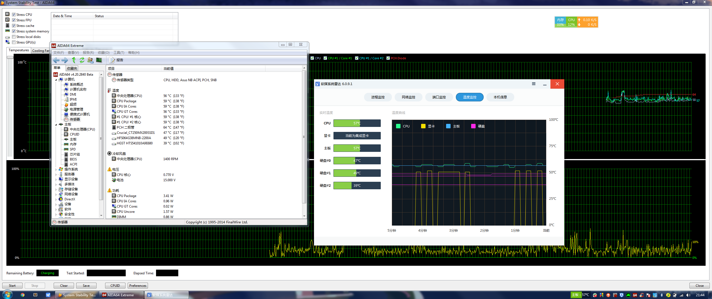
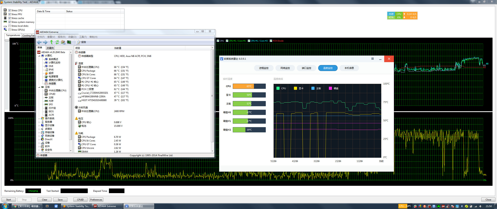
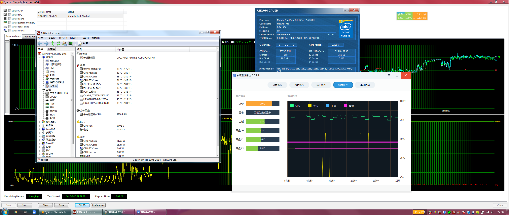
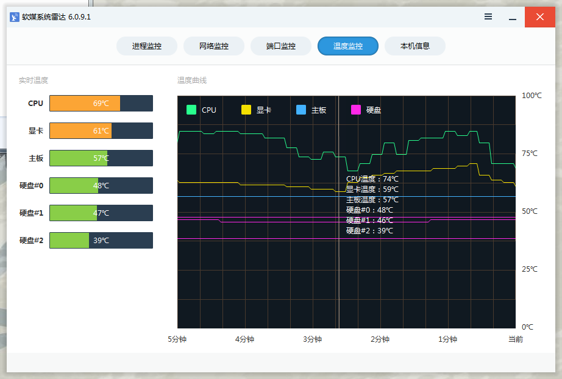
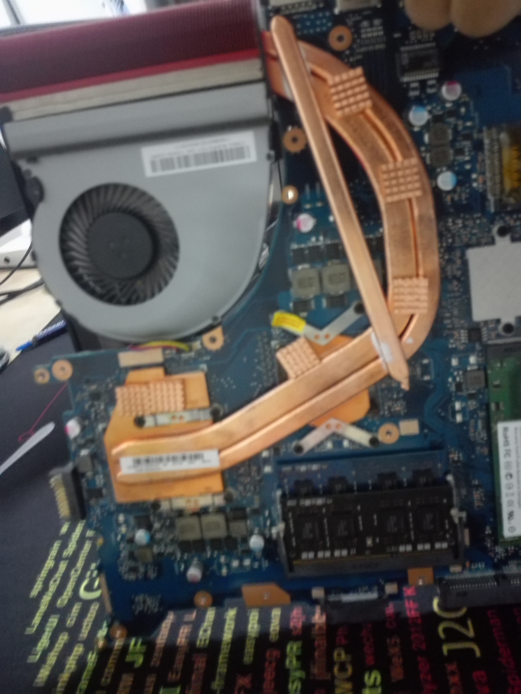
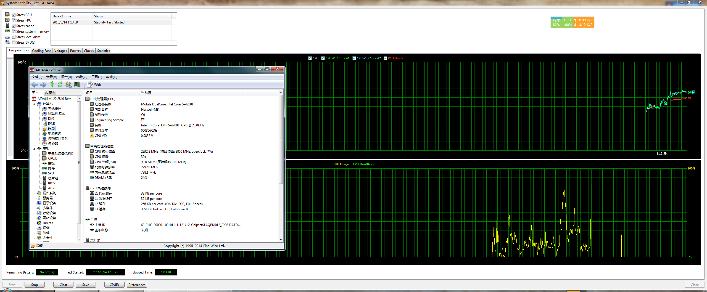

本子是zx50jx，i54200H+950M，散热见图
单风扇+铜管大回环，散热结构渣的一逼。
的确，950M的发热量并不高，但是这散热结构显然低估了i54200H的发热能力。
现在距离买本已经过去一年了，中间开过一次盖，但是里面没灰，也没有换过硅脂。
现在待机时cpu温度为达到55摄氏度：
看视频时最低65°，最高到了75°：

单烤CPU，温度稳定在80温度墙附近，刚好不睿频。
显卡因为与cpu共用同一条热管，所以即使不用温度也在60左右；
使用3D MARK，使显卡满载，CPU温度80左右，显卡温度70左右，下图所示
然后便是散热优化：
开盖后发现CPU和显卡上的硅脂已经完全阵亡了

主要分3个方面，更换硅脂，加散热片，加铜管；
硅脂用的是ICD-7：

加了7个散热片，其中显卡处2个，cpu处1个，铜管上4个：考虑到风道与空间问题，铜管只加了一条。如图：

最终效果：

未盖后盖，未加光驱时的拷机图

加后盖后
加光驱为后拷机